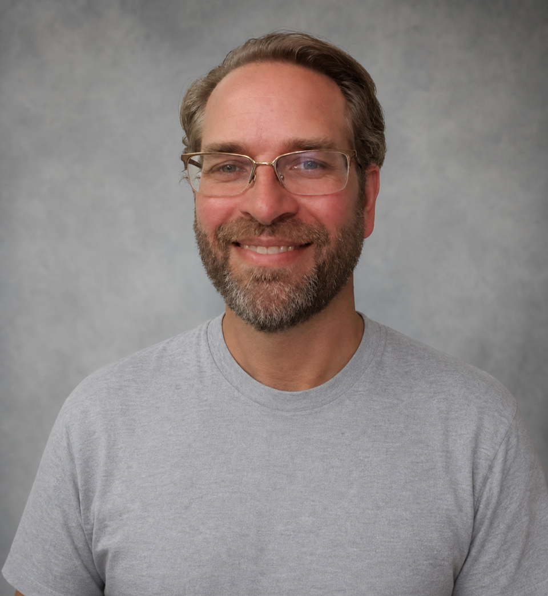

Reasoning Engine
Interprets live operational signals, constraints, context, and memory.
Interprets live operational signals, constraints, context, and memory.
Resolves intelligence into ranked, explainable decisions in real time.
Returns decisions to the systems and operators that move the business.
Decades building real-time nervous systems for consequential operations.
Air travel · Logistics · Shipping · Retail · Wall Street
 Founder, Cerniam
Founder, CerniamOperational knowledge · Real-time systems · Agentic decision platforms
Van Oleson is the founder of Cerniam and the architect behind its Operational Knowledge Graph and agentic decision platform. His work has long focused on one consequential problem: how to turn live operational interactions into trusted, decision-ready intelligence.
His foundation reaches back to Delta Air Lines and Georgia Tech, where he worked on Operational Information Systems for large-scale airline operations. Across airlines, retail, enterprise platforms, and now agentic AI, Van has spent his career building versions of the architecture Cerniam brings together today.
Operators and platform builders who have shaped commerce, network computing, and the real-time data infrastructure beneath modern enterprise systems.
Customer, commerce & digital transformation
Chris Rupp brings leadership experience across Amazon, Microsoft, Albertsons, Victoria’s Secret, and Canadian Tire. Her career spans customer experience, Prime and marketplace operations, digital commerce, fulfillment, loyalty, data, and enterprise-scale retail transformation.
 Enterprise Platforms
Enterprise PlatformsNetwork computing & enterprise platforms
Scott McNealy co-founded Sun Microsystems and served as its longtime CEO, helping define the era of network computing, open systems, infrastructure, and enterprise platforms. He brings decades of experience building and scaling consequential technology companies.

Systems EngineeringDistributed systems, event streaming & enterprise systems engineering
Hans Jespersen is a veteran systems-engineering leader whose career spans Sun Microsystems, Yahoo, eBay, TIBCO, Solace, and Confluent. He brings deep experience in large-scale distributed systems, event-driven architecture, streaming infrastructure, and enterprise adoption of mission-critical data platforms.
Specialist and operating advisors will appear here as names, roles, and public biographies are confirmed. This register remains deliberately quieter so the founder and tier-one enterprise lineage land first.
Working preview · Causal instrument animation · July 2026